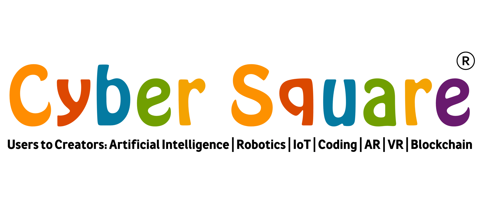

Cyber square is an innovative online platform that teaches kids to learn coding and thereby improving the 21st century skills. It is also an excellent way to teach mathematical and science concepts in a different way and have problem-solving skills, logic and patience.
Cyber Square is the best online coding platform for kids that offers various online coding courses which will make kids future-ready. It helps kids to expose their creativity and acquire 21st-century skills.
Every registered student will have a separate login account to the Cyber Square online learning platform. Here, they will be able to view their course progress, assignments provided by teachers, their batch performance, progress cards, and so on. They will be able to attend online exams and live classes. Students can attend live classes to clear their doubts and interact with teachers. Apart from these, they will also get notifications on upcoming live classes, news, and events so that they won’t miss them.
Teachers can also login into Cybersquare platfrom and able to view the students perfomance, batch progress, make reports, evaluate their works such as assignments, projects, questions, etc. Teachers can schedule an online class and online exams also.
Cybersquare provide live b2c online coding courses for kids and prepare them for the future. Our experts will provide 1:1 online coding classes and help your child to create their own websites, apps, and games.
| Course | age group | levels |
|---|---|---|
| Little coder | 4+ | beginner, intermediate, advanced |
| Design your website | 7+ | beginner, intermediate, advanced |
| Junior Python | 9+ | beginner, intermediate, advanced |
| Javascript game developer | 4+ | beginner, intermediate, advanced |
| Artificial intelligence | 4+ | beginner, intermediate, advanced |
Cyber Square provide textbooks to students. eTextbooks are also available. Cyber Square textbooks are designed by experts in the industry. They have designed it in such a way as to improve the academic performance of students in mathematics and science. In this textbook, Computer programming is covered from its basic level to advanced level. The syllabus is designed in a project-based approach and a gamified way so that students will find them interesting. Students will become capable of creating their own projects using the latest technologies.
Cyber Square can help students to prepare for National & International competitions. Coding clubs and digital fests conducted in Cyber Square integrated schools are a platform for students to discuss their creative ideas and develop creative projects. They will get an opportunity to learn the latest technologies like AI, Python, Robotics, IoT which will help them to prepare for national & international competitions. This will improve their creative skills, problem-solving skills, mathematical skills, and confidence.

| Organisation: | Cybersquare |
| Organisation type: | pvt ltd |
| Founded: | 2013 |
| Headquarter: | Landon |
| Services: | Eductation |
| Website: | cybersquare.org |